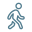
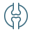
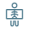
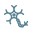
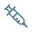

Avaliação individual
O atendimento começa pela história da dor, exame físico e análise dos exames disponíveis.
Avaliação ortopédica para quadril
Consulta para investigar dor no quadril, dor lateral ao deitar, rigidez, limitação para caminhar, artrose, bursites, tendinites e sintomas que afetam a mobilidade.
O atendimento começa pela história da dor, exame físico e análise dos exames disponíveis.
A consulta considera como a dor afeta sono, trabalho, treino, caminhada e rotina.
Procedimentos para dor e ortopedia regenerativa podem ser discutidos conforme o diagnóstico.
A equipe confirma cobertura, autorização e disponibilidade antes do atendimento.
Sintomas
Quando a dor começa a limitar movimentos, sono ou atividades simples, vale investigar a causa antes que o problema se arraste.

Dor ao iniciar passos, subir escadas, andar mais tempo ou ficar em pé.
Desconforto na lateral do quadril que atrapalha o sono.

Dificuldade para cruzar as pernas, calçar sapatos, entrar no carro ou agachar.
Mudança na forma de caminhar ou sensação de poupar uma perna.
Sintomas que surgem depois de impacto, caminhada longa, treino ou aumento de carga.

Laudos devem ser analisados junto com dor, mobilidade e impacto na rotina.
Possíveis causas
Dor parecida pode ter causas diferentes. Por isso, a consulta não se resume ao laudo: ela cruza sintomas, exame físico, rotina, histórico e objetivos do paciente.
Desgaste articular pode causar dor na virilha, rigidez e limitação progressiva.
Dor na lateral do quadril, muitas vezes pior ao deitar sobre o lado dolorido.
Tendões ao redor do quadril podem sofrer sobrecarga e gerar dor persistente.
Treino, caminhada, postura e compensações podem manter sintomas.

Coluna lombar e outras estruturas podem gerar dor percebida no quadril.
Quedas e pancadas precisam ser avaliadas quando há dor intensa ou dificuldade para apoiar.
Tratamento
O objetivo é definir um caminho coerente para o seu caso: controlar a dor, recuperar função e evitar decisões apressadas.
Avaliação de mobilidade, marcha, força, pontos de dor e testes específicos.
Raio-x, ultrassom ou ressonância são interpretados junto com seus sintomas.
Conduta ajustada ao diagnóstico, nível de dor, rotina e objetivos do paciente.

Procedimentos podem ser considerados quando houver indicação clínica.
Quando infiltrações, bloqueios, ondas de choque, PRP ou outros recursos forem considerados, a indicação é explicada com benefícios, limites, preparo e alternativas.
Convênios AMHP
Confira os convênios disponíveis para consulta. Cobertura, disponibilidade de agenda e autorizações devem ser confirmadas com a equipe antes do atendimento.
47 convênios listados.
Como funciona
Confirme agenda, convênio e orientações iniciais para a avaliação.
O Dr. Thiago avalia sua queixa, rotina, histórico e exames já realizados.
Você recebe explicação sobre diagnóstico provável, alternativas e próximos passos.
Quando houver procedimento, a equipe orienta preparo, autorização e acompanhamento.
Sobre o médico
Ortopedista e traumatologista com atuação no cuidado de pacientes com dor musculoesquelética, lesões, queixas articulares e limitações de movimento.
Seu trabalho combina avaliação médica, explicação clara e recursos de tratamento definidos caso a caso, incluindo procedimentos em consultório e em ambiente hospitalar quando indicados.
CRM 18843 | RQE 18832
Localização
Dúvidas frequentes
Não. Pode ser bursite, tendão, músculo, coluna, sobrecarga ou outras causas.
Pode, mas a confirmação depende de avaliação. Outras estruturas também podem gerar dor lateral.
Quando a dor limita caminhada, sono, escadas, apoio ou persiste por semanas.
Não. Muitos casos começam com medidas para controle da dor, melhora da mobilidade e fortalecimento.
Agendamento
Fale com a equipe para verificar disponibilidade, convênio e agendar uma avaliação com o Dr. Thiago Cerqueira.